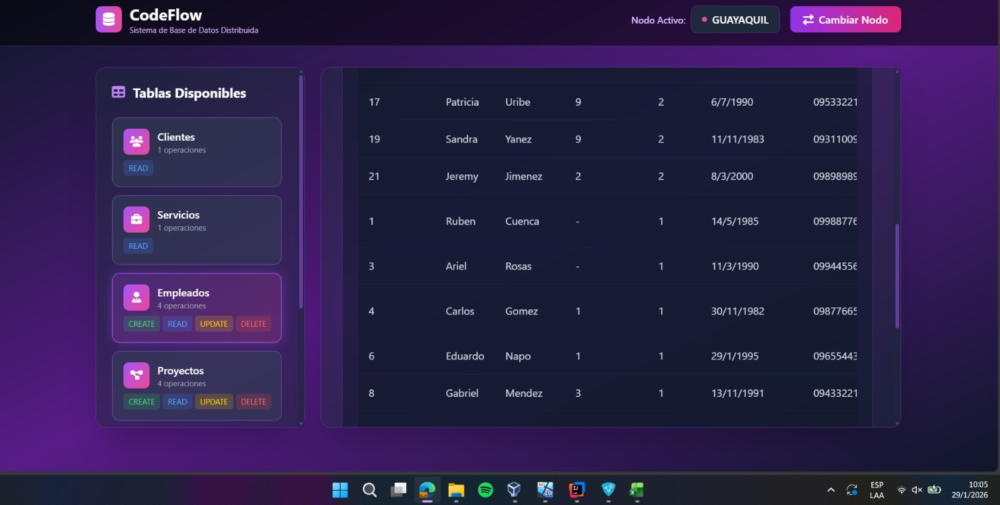
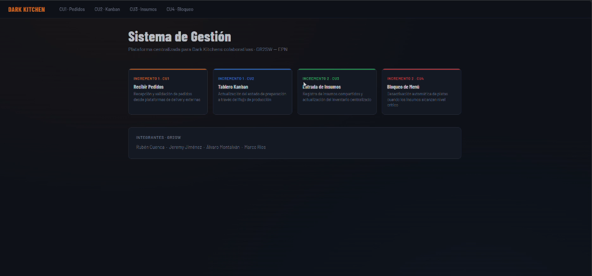

Mi curriculum
Quien soy yo?
Soy Alvaro Montalvan, estudiante de la Escuela Politécnica Nacional. Actualmente me encuentro cursando sexto semestre , donde he desarrollado habilidades en programación, bases de datos y desarrollo de software. Me caracterizo por ser una persona responsable, analítica y con muchas ganas de aprender y mejorar constantemente en el área tecnológica.
Habilidades
Lenguajes de Programación que he usado:
Mi IA preferida des Claude AI
Experiencia (Proyectos Realizados)
- Desarrollo de Aplicaciones Web "Dark Kitchen": Diseñé e implementé un sistema de gestión para cocinas ocultas utilizando Java, JSP y Hibernate, asegurando una persistencia de datos robusta y una arquitectura limpia.
- Sistemas de Agentes Multi-Agente (JADE) con LLMs: Integré modelos de lenguaje (Ollama/Llama) en sistemas autónomos para permitir la comunicación secuencial inteligente entre agentes, explorando la vanguardia de la IA.
- Infraestructura de Bases de Datos Distribuidas: Configuré replicación en SQL Server y manejo de Linked Servers, enfocándome en la disponibilidad de datos y la consistencia en entornos empresariales.
- Investigación y Desarrollo en Optimización de Sistemas: He trabajado profundamente en el ajuste de hardware y software (Intel/Gigabyte) para maximizar el rendimiento en entornos de desarrollo exigentes.
Portafolio
- Chuchaqui-Game (Desarrollo 3D en OpenGL): Un videojuego en 3D ambientado en la Plaza de San Francisco de Quito.
Realicé el modelado detallado de la arquitectura colonial en Blender y desarrollé el motor de renderizado en C++ usando OpenGL, gestionando texturas, iluminación y mapeo de vértices.

- Sistema de Base de Datos Distribuida: Un proyecto enfocado en la alta disponibilidad y consistencia de la información.
Implementé estrategias de replicación en SQL Server y configuré servidores vinculados (Linked Servers) para permitir la interoperabilidad entre diferentes nodos de datos de manera eficiente.

- Aplicación de Gestión con Hibernate y JSP: Software para la administración de procesos en una "Dark Kitchen".
Diseñé la capa de persistencia utilizando Hibernate para asegurar una comunicación fluida con la base de datos y desarrollé la interfaz dinámica con JSP.
